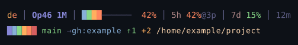

CLAUDE STATUSLINE / TERMINAL INSTRUMENTS
Keep the session
in view.
Context, rate limits, model and workspace in two terminal lines. Fourteen renderers share the same underlying session data.
Choose a terminal theme

{kind=link}
bash theme.sh buddyTheme changes take effect on the next Claude Code tool call. This gallery changes the preview only.
Read the two lines
- Session line
- Account initials, model and context size, context percentage, five-hour and seven-day rate limits, and session duration.
- Workspace line
- Branch, remote, commits ahead or behind, changed files, stash count and the working directory.
- Missing Git data
- Repository indicators are omitted when Git or a repository is unavailable.
- Context corruption
- The rainbow theme starts distorting its context bar above 55%. Rate-limit percentages remain readable. This behavior is part of the terminal theme, not a change to your actual context.
Install & configure
Requires Claude Code v2.1+, Python 3.6+ and Bash. Git adds branch and remote information. Windows uses Git Bash or WSL; macOS and Linux use Bash.
git clone https://github.com/thereprocase/claude-statusline.git
cd claude-statusline
bash install.shThe first install offers theme selection and an interactive setup walkthrough. Restart Claude Code to activate it.
Adjust the readout
bash setup.shChoose the model format, initials, date format and reset-time visibility. Preferences live in ~/.claude/statusline-config.json and persist across updates.
Useful on its own. Connected when needed.
Usage history
Crossings of the 95% rate-limit threshold are logged locally. Claude Usage can display those events alongside its transcript-based heatmap.
Agent coordination
Per-session context snapshots can feed Trio’s participant context rings through the monitor heartbeat.
Update, extend or remove
git pull
bash install.shThe installer refreshes the theme files while preserving the selected theme and configuration. A theme is a Python file exposing render(ctx); inspect the renderers ↗.
bash uninstall.shMIT licensed. Full installation and layout reference ↗